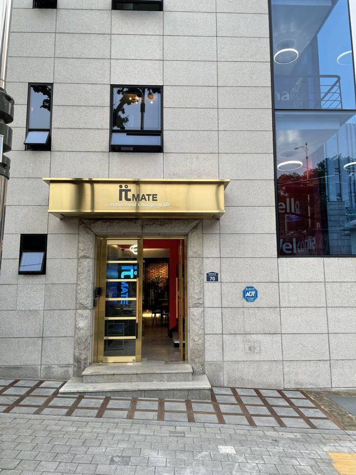
2020.08 ~ 2024.10 · SW 개발자 → Application Architect
2020.08 ~ 2024.10 (4년 2개월) · 사원 → 대리
공공기관·공기업 대상 대규모 통합 ERP 12개 프로젝트를 수행했습니다. 4년 내내 직접 코드를 작성한 실무 개발자였고, 후반에는 개발과 함께 고도화 사업의 아키텍처 설계와 프로젝트 관리를 겸했습니다.
지금의 AI 연구와 이어지는 지점은 데이터가 어떤 형태로 쌓여야 나중에 쓸 수 있는지를 정하는 일입니다. 모델을 붙이기 전 단계에서 현업의 언어를 데이터 구조로 옮기고, 그것을 직접 구현해 운영 중인 시스템 위에 얹는 일을 4년간 반복했습니다.
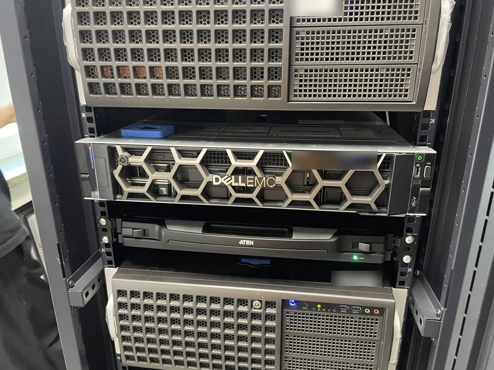
2026.10 ~ 진행 중 · 서버 담당, 단독 설계·운영
2026.10 ~ 진행 중 · 연구실 구성원이 실제로 쓰는 서비스 운영 중
연구실 서버 담당으로 Slack 봇, 프로젝트 데모 사이트(비언어적 문맥 파악 챗봇, ARPA-H HITL), 워치 데이터 대시보드, GitLab 등 내부·외부 서비스를 설계·개발·운영합니다. 그중 구글 시트 스크립트로 돌던 랩미팅 순번 봇은 서버 애플리케이션으로 다시 만들어 운영하고 있습니다.
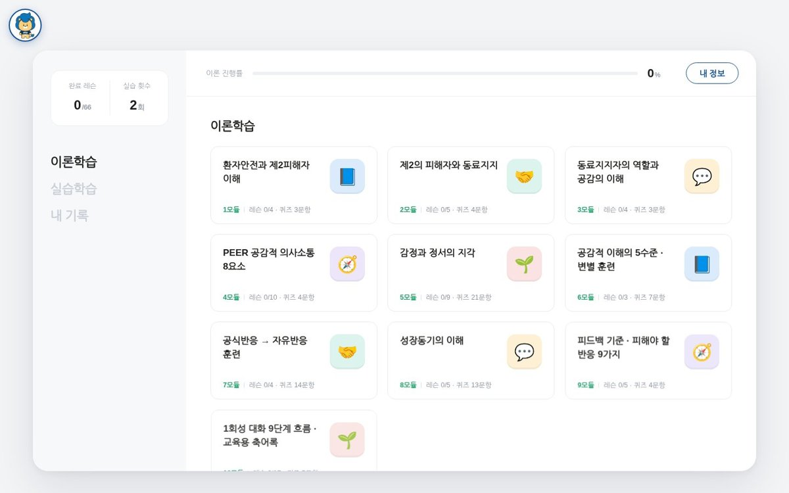
2026.06 ~ 진행 중 · 설계 및 백엔드 단독 구현
2026.06 ~ 진행 중 · 간호대학 임상 자문진과 공동 연구 · 운영 중
기존에 사람이 수행하던 훈련 시나리오를 LLM 시뮬레이션으로 대체하는 시스템입니다. 대화 설계부터 백엔드 전체를 직접 구현해 운영 단계까지 가져갔습니다.
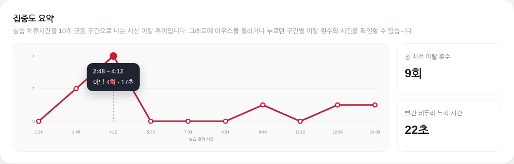
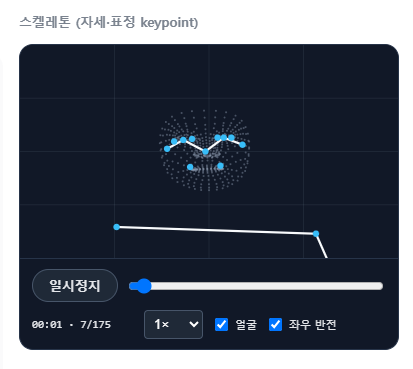
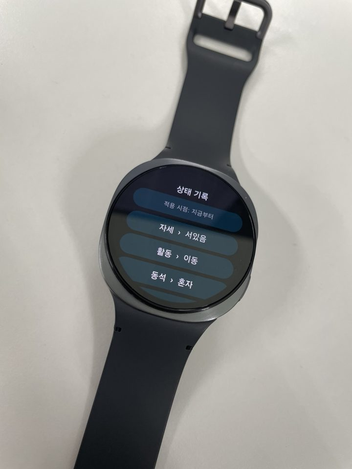
연구용 · 진행 중 · 단독 개발
연구용 · 진행 중 · Galaxy Watch (Wear OS)
연구에 필요한 생체신호를 일상 환경에서 장시간 모으기 위해 갤럭시 워치 앱을 혼자 개발했습니다. 실제 실험에 쓰면서 고치기를 반복해 28차 버전까지 개선했습니다.
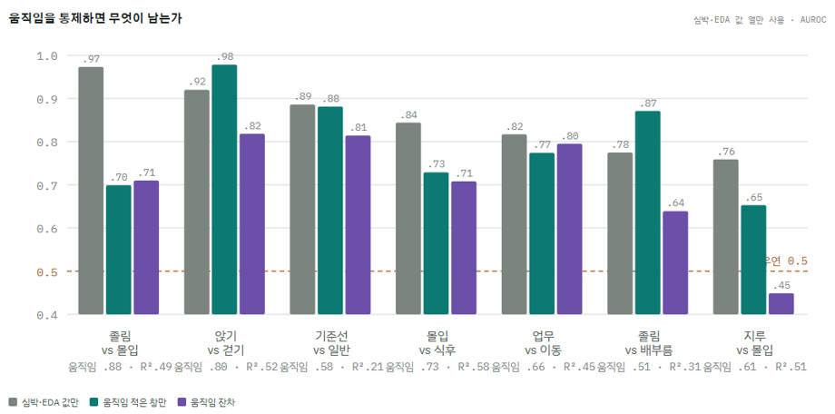
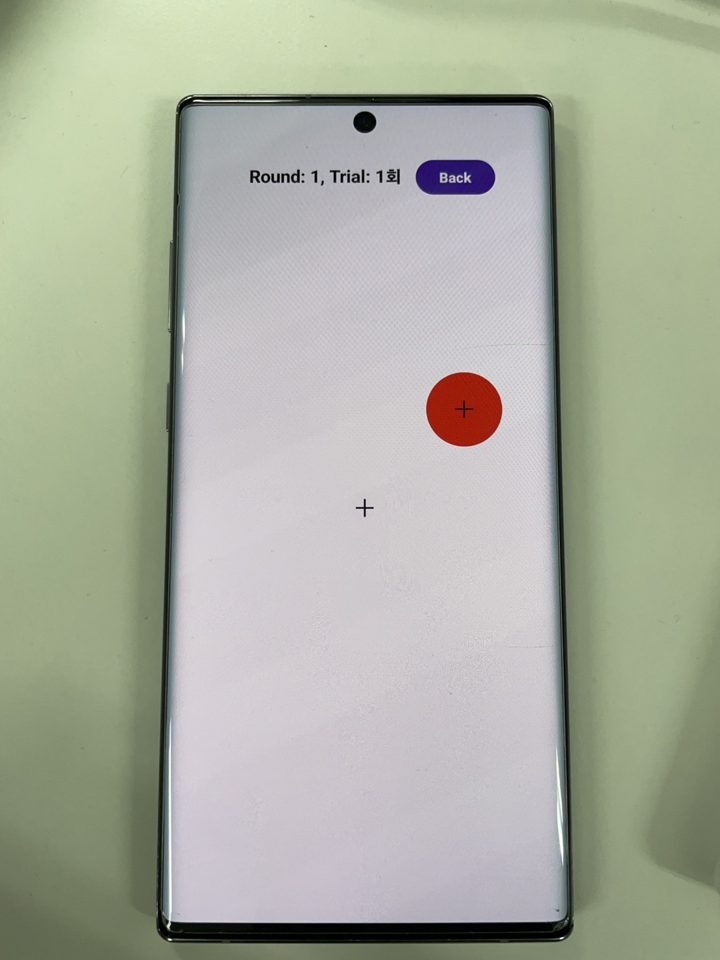
2025.08 ~ · 석사 학위논문 · IEEE TII 제1저자 투고
2025.08 ~ 진행 중 · 제1저자 · IEEE Transactions on Industrial Informatics 투고(심사 중)
기존 생체신호 센서는 전극 부착과 비용, 착용 부담 때문에 현장에 정착하기 어렵습니다. 이미 손에 있는 상용 스마트폰의 터치스크린을 상태 센서로 쓰는 접근을 제안하고, 실험 설계부터 모델 개발과 배포 검증까지 수행했습니다.
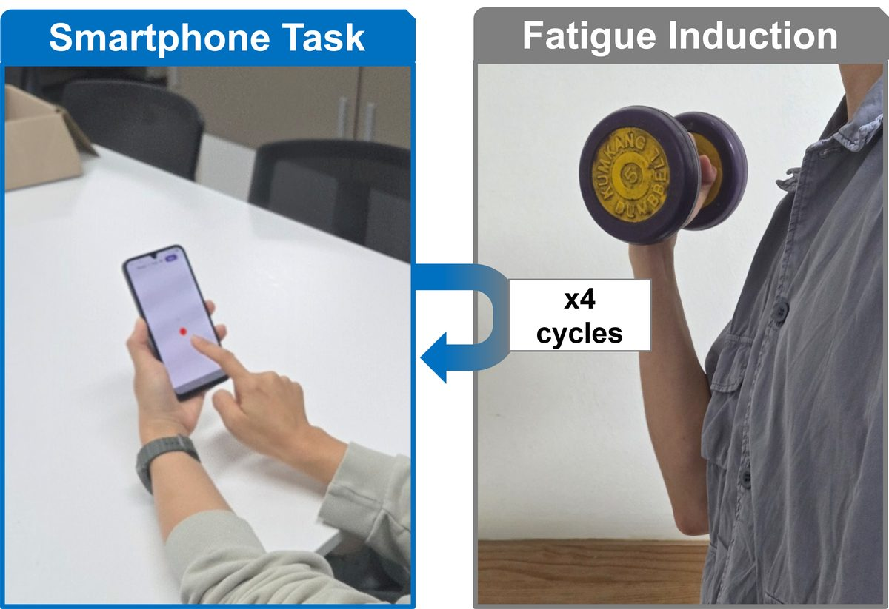
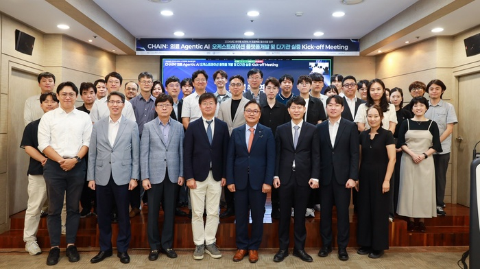
2026.07 ~ 진행 중 · 한국형 ARPA-H 참여연구원
2026.07 ~ 진행 중 · 한국형 ARPA-H 프로젝트 · 보건복지부 / 한국보건산업진흥원
여러 AI 에이전트가 협업하는 의료 플랫폼 과제에 제안서 작성 단계부터 참여하고 있습니다. 사람과 AI가 함께 판단하는 지점의 설계를 맡고 있습니다.
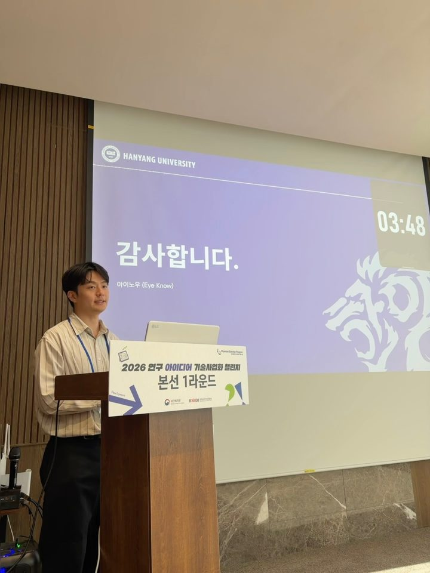
2026.08 ~ 2026.10 · 팀 대표 · 기술사업화 챌린지 본선 진출
2026.08 ~ 2026.10 · 2026 연구 아이디어 기술사업화 챌린지 (보건복지부 / 한국보건산업진흥원) · 본선 진출
말과 타이핑이 어려운 중증 운동장애 환자가 남아 있는 생체신호만으로 대화할 수 있게 하는 솔루션입니다. 공학·의학 4인 팀을 꾸려 대표를 맡았고, 2026 연구 아이디어 기술사업화 챌린지 본선에 진출했습니다. 현재 Global Health Grand Innovation Challenge 2027을 준비하고 있습니다.
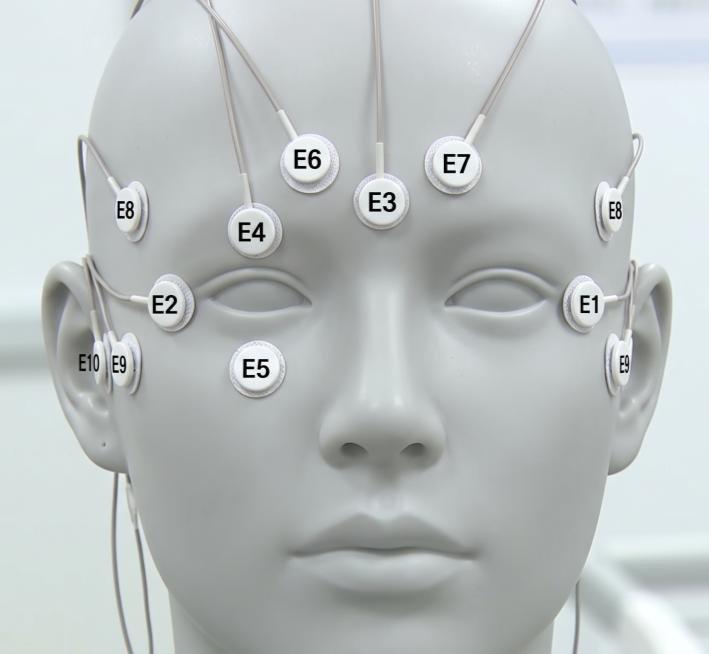
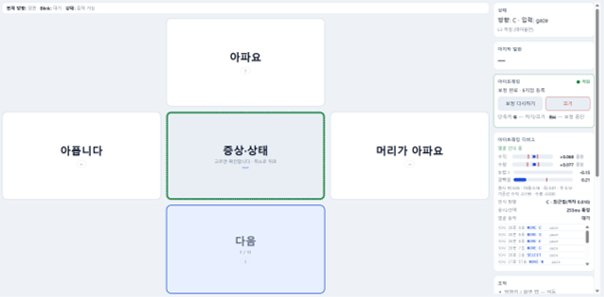
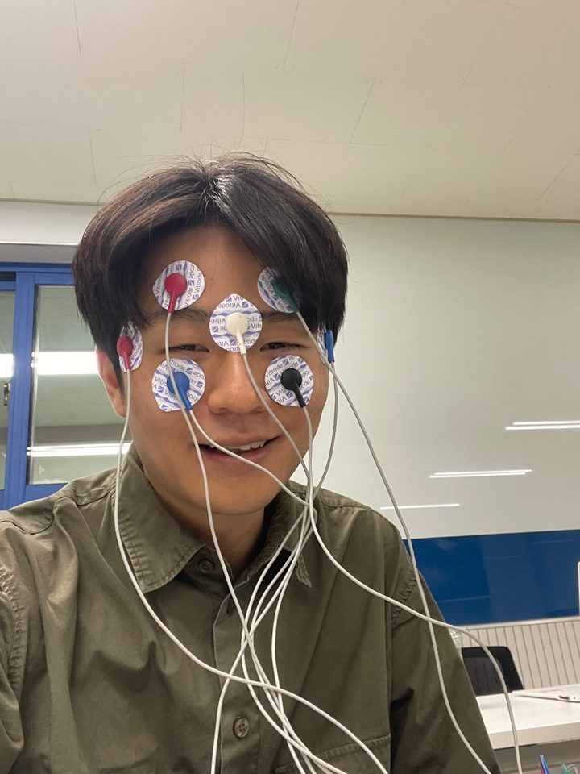
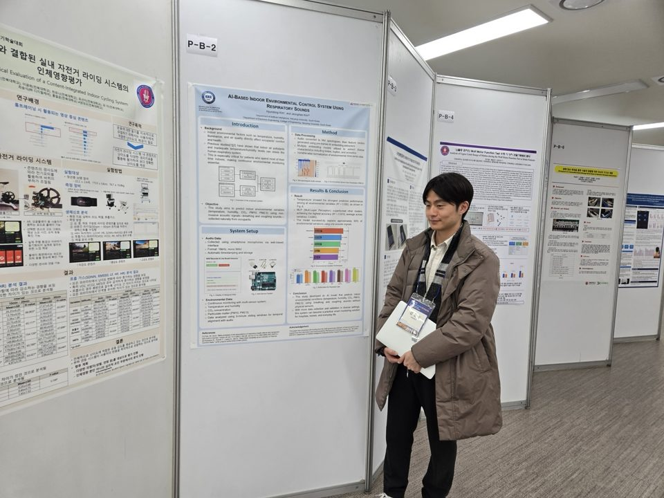
2025.03 ~ 2025.10 · 개인 연구 · 학회 제1저자 발표
2025.03 ~ 2025.10 · 제1저자 · 한국재활복지공학회 정기학술대회 포스터 발표
별도 센서 없이 상용 기기의 내장 마이크로 수집한 호흡음만으로 실내 환경 변수를 역추정할 수 있는지 검증한 탐색 연구입니다.
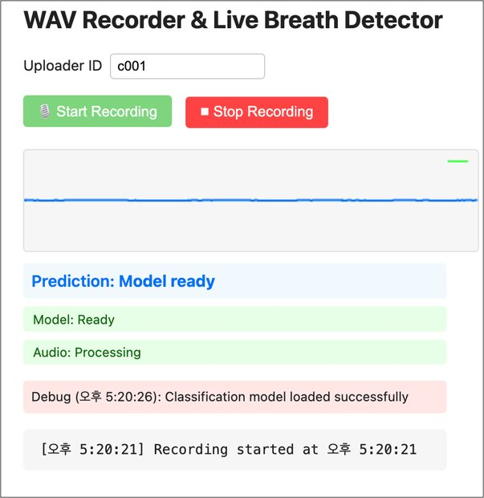
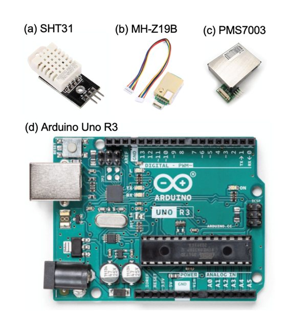
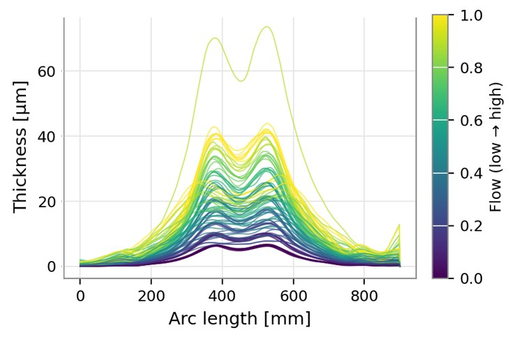
2026.04 ~ 2026.10 · 산학협력 연구원
2026.04 ~ 2026.10 · 기업 공동 과제
공정 조건과 품질 프로파일의 관계를 예측·역예측하는 과제입니다. 데이터 파이프라인부터 모델링·검증·보고까지 분석 실무를 단독 수행했습니다.
연구·프로젝트의 상세 내용, 코드, 실험 자료는 요청해 주시면 개별적으로 안내드립니다.